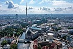
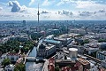

Em Berlim, cidade de contrastes e cores,
Histórias ecoam entre sombras e amores.
As ruas vibram com ritmos variados,
Memórias de tempos, passados e sonhados.
O Muro que um dia separou corações,
Agora é arte, expressão de emoções.
Cafés que exalam aroma de esperança,
E o Spree reflete a dança da mudança.
 
